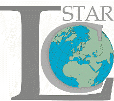
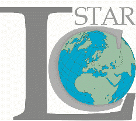

 

|
|
Project Objectives, Milestones and Description of Work
The objective of the LC-STAR is to improve human-to-human and man-machine communication in multilingual environments. The project aims to create lexica and corpora needed for transferring Speech-to-Speech Translation (SST) components, i.e. flexible vocabulary speech recognition, high quality text-to-speech synthesis (TTS) and speech centered translation into selected languages. SST components are targeted to be integrated into speech driven interfaces embedded in mobile appliances and network servers. LC-STAR will concentrate on large lexica with phonetic, prosodic and morpho-syntactic content and on bilingual aligned text corpora. Within LC-STAR quasi industrial standards for those language resources will be established, lexica for 13 languages and text corpora for 3 languages will be created. The transfer will be shown by a demonstrator translating within 3 languages. The results will be disseminated via ELRA.
Description of the work The work in the project LC-STAR is performed by two parallel running tracks addressing the different maturity of the speech-to-speech translation components.
Track I (duration 2 years) has as objectives: - Specification and creation of large word lists and lexica suited for flexible vocabulary speech recognition and high quality speech synthesis covering a wide range of domains.
Track II (duration 3 years) has as objectives: - Investigation of speech centered translation technologies focusing on requirements concerning language resources (LR) - Specification and creation of the LR needed for speech centered translation - Building a demonstrator for speech-to-speech translation (the figure of the demonstrator) - Demonstration of language transfer
The lexica created in Track I will cover 13 target languages. Each lexicon will have at least 100 000 entries consisting of 50 000 common words, 45 000 proper names and 5 000 application specific words. The corresponding word lists are extracted from large text corpora containing at least 10 million of words. In Track II the needs on LR for statistic translation approaches are investigated. Those LR are aligned bilingual text corpora and monolingual lexica with morpho-syntactic entries. The size of the text corpora and the kind of morpho-syntactic information needed will be evaluated with respect to speech translation quality. Based on the evaluation results lexica for 8 languages and bilingual text corpora for 3 languages will be specified and created. These LR will cover a tourist domain which is also chosen for the demonstrator showing the language transfer within 3 languages.
The project has defined the following milestones: - All lexica for recognition and synthesis are specified and created - Speech centered translation approaches are investigated concerning their needs on LR - Lexica and text corpora needed for speech centered translation are specified and created - LR based transfer of speech-to-speech translation is demonstrated
Expected results: - Specification of lexica and corpora needed for SST components - Lexica for flexible vocabulary speech recognition and high quality TTS for 13 languages - Lexica (text corpora) needed for speech centered translation for 8 (3) languages
For the time being the following languages are The following language pairs are covered in Track II for aligned covered in the Track I lexica: monolingual lexica and bilingual text corpora:
Back to Top |
|
|
{kind=link}